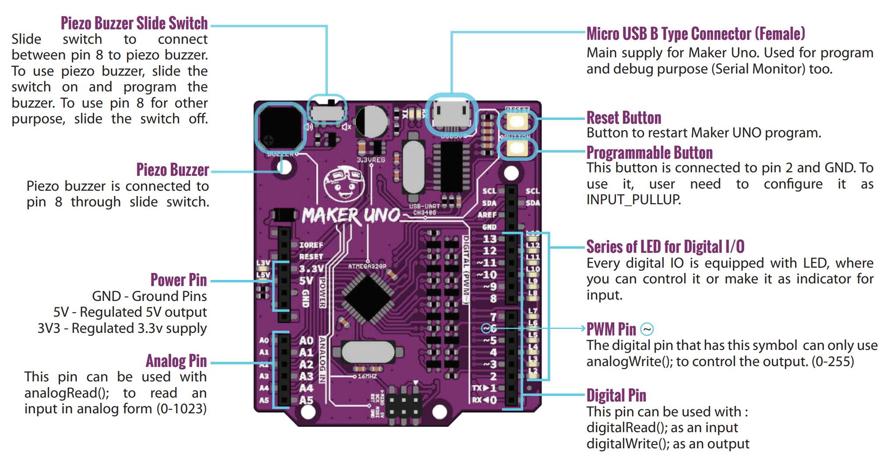
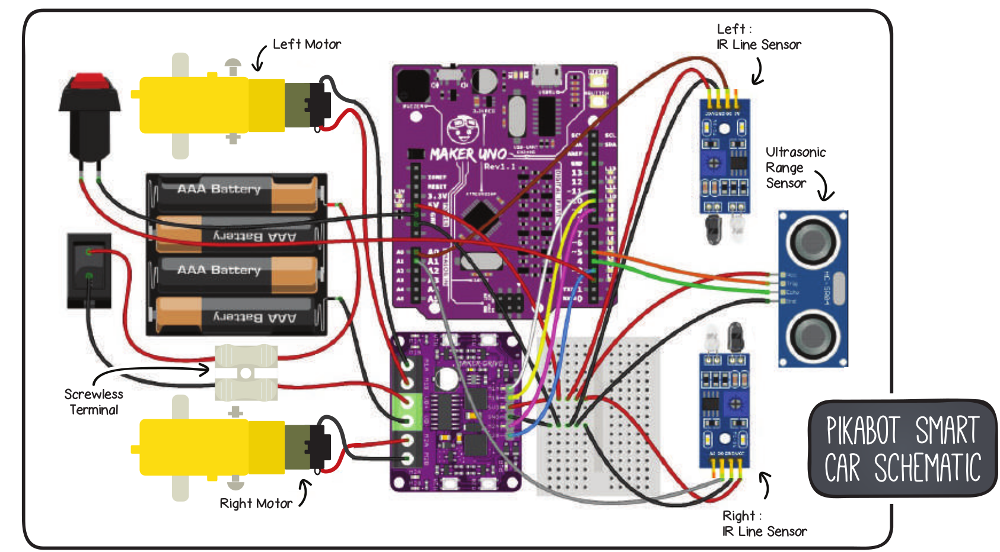
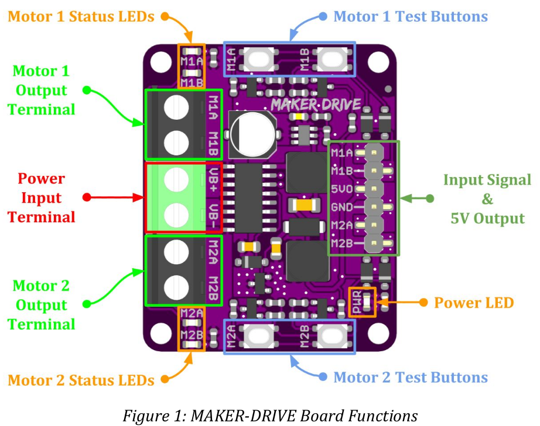
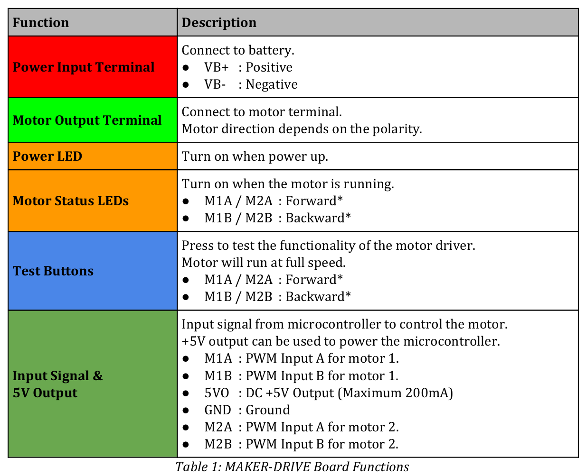
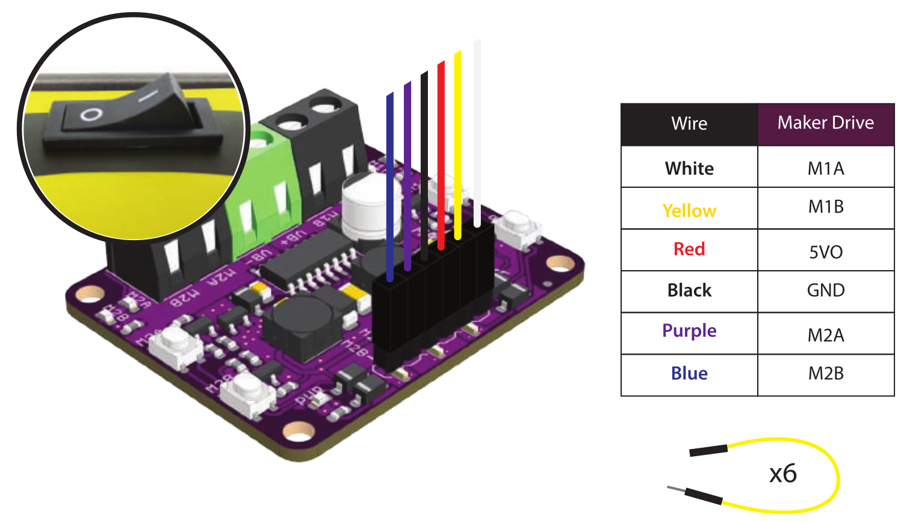

PikaBot
References
- Kit
- Arduino IDE
- The Arduino IDE from Ubunut 22.04 Repo didn't work.
- To get ttyUSB0 working, some brail service must get disabled. dmesg showed the issue
- The PikaBot is using an Cytron Maker Uno


Git
Prepare Arduino IDE
- Install Cytron Motor Drivers Library
PikaBot Book
- Example projects using the Arduino IDE.
- Git

Project 1 - Let's move it
Project 1.1 - Move forward
The first code example:
#include <CytronMotorDriver.h>
CytronMD motorLeft(PWM_PWM, 11, 10);
CytronMD motorRight(PWM_PWM, 9, 3);
void setup() { }
void loop() {
motorLeft.setSpeed(200);
motorRight.setSpeed(200);
}
Cytron Motor Driver
  
| Description | Arduino | Maker Drive | Description |
|---|---|---|---|
| PB3/OC2A | 11 | M1A | PWM A motor 1 |
| PB2/OC1B | 10 | M1B | PWM B motor 1 |
| PB1/OC1A | 9 | M2A | PWM A motor 2 |
| PB3/OC2B | 3 | M2B | PWM B motor 2 |
| Input A | Input B | Ouput A | Output B | Description |
|---|---|---|---|---|
| Low | Low | Low | Low | Break |
| High | Low | High | Low | Forward |
| Low | High | Low | High | Backward |
| High | High | Open | Open | Coast |
Cytron Motor Drivers Library
enum MODE {
PWM_DIR,
PWM_PWM,
};
class CytronMD
{
public:
CytronMD(MODE mode, uint8_t pin1, uint8_t pin2);
void setSpeed(int16_t speed);
protected:
MODE _mode;
uint8_t _pin1;
uint8_t _pin2;
};
setSpeed implementation:
case PWM_PWM:
if (speed >= 0) {
analogWrite(_pin1, speed);
analogWrite(_pin2, 0);
} else {
analogWrite(_pin1, 0);
analogWrite(_pin2, -speed);
}
break;
analogWrite()
Writes an analog value (PWM wave) to a pin. Can be used to light a LED at varying brightnesses or drive a motor at various speeds. After a call to analogWrite(), the pin will generate a steady rectangular wave of the specified duty cycle until the next call to analogWrite() (or a call to digitalRead() or digitalWrite()) on the same pin.
Project 1.2 - Move by time
#include <CytronMotorDriver.h>
CytronMD motorLeft(PWM_PWM, 11, 10);
CytronMD motorRight(PWM_PWM, 9, 3);
void setup() { }
void loop() {
motorLeft.setSpeed(200);
motorRight.setSpeed(200);
delay(1000);
motorLeft.setSpeed(0);
motorRight.setSpeed(0);
delay(500);
motorLeft.setSpeed(-200);
motorRight.setSpeed(-200);
delay(2000);
motorLeft.setSpeed(0);
motorRight.setSpeed(0);
delay(500);
}
delay()
Pauses the program for the amount of time (in milliseconds) specified as parameter. (There are 1000 milliseconds in a second.)
Project 1.3 - Move functions
#include <CytronMotorDriver.h>
CytronMD motorLeft(PWM_PWM, 11, 10);
CytronMD motorRight(PWM_PWM, 9, 3);
void robotStop() {
motorLeft.setSpeed(0);
motorRight.setSpeed(0);
}
void robotMove(int speedLeft, int speedRight) {
motorLeft.setSpeed(speedLeft);
motorRight.setSpeed(speedRight);
}
void setup() { }
void loop() {
robotMove(-200, 200); // turn left
delay(1000);
robotStop();
delay(500);
robotMove(200, -200); // turn right
delay(2000);
robotStop();
delay(500);
}

Project 1 - Challenge
#include <CytronMotorDriver.h>
#define TIME_30_DEG 400 // time depends on battery state and hardware
CytronMD motorLeft(PWM_PWM, 11, 10);
CytronMD motorRight(PWM_PWM, 9, 3);
void robotStop() {
motorLeft.setSpeed(0);
motorRight.setSpeed(0);
}
void robotMove(int speedLeft, int speedRight) {
motorLeft.setSpeed(speedLeft);
motorRight.setSpeed(speedRight);
}
void circle() {
robotMove(100, 200); // move inner wheel slower than outer wheel
delay(5000);
robotStop();
}
void rectangle() {
for(int i=0; i<4; i++) {
robotMove(200, 200);
delay(2000);
robotMove(-200, 200);
delay(3 * TIME_30_DEG); // 90°
}
robotStop();
}
void triangle() {
for(int i=0; i<3; i++) {
robotMove(200, 200);
delay(2000);
robotMove(-200, 200);
delay(4 * TIME_30_DEG); // 120°, outer angel of triangle
}
robotStop();
}
void setup() { }
void loop() {
circle();
delay(1000);
rectangle();
delay(1000);
triangle();
delay(1000);
}